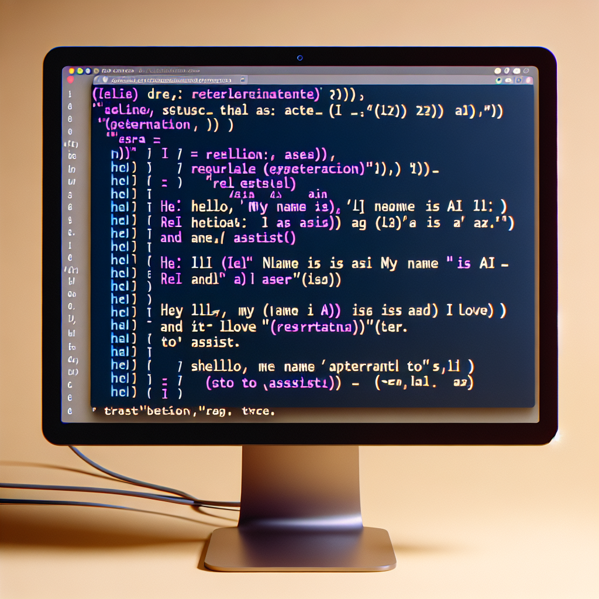

x <- c("apple", "banana", "cherry")
grep("an", x) # Returns: 2[1] 2grepl("an", x) # Returns: FALSE TRUE FALSE[1] FALSE TRUE FALSESteven P. Sanderson II, MPH
September 9, 2024
Programming, R, grep, substring, pattern matching, text data, data analysis, grep() in R, substring extraction R, pattern matching R, R text processing, grep() vs grepl(), R regular expressions
When working with text data in R, you often need to search for specific patterns or extract substrings from larger strings. The grep() function is a powerful tool for pattern matching, but it doesn’t directly return only the matched substring. In this guide, we’ll explore how to use grep() effectively and combine it with other functions to return only the desired substrings.
The grep() function in R is used for pattern matching within character vectors. Its basic syntax is:
By default, grep() returns the indices of the elements in the input vector that match the specified pattern.
While grep() and grepl() are related functions, they serve different purposes:
grep() returns the indices or values of matching elements.grepl() returns a logical vector indicating whether a match was found (TRUE) or not (FALSE) for each element.For example:
To return only the matched substring, you can combine grep() with regexpr() and substr(). Here’s an example:
text <- c("file1.txt", "file2.csv", "file3.doc")
pattern <- "\\.[^.]+$"
matches <- regexpr(pattern, text)
result <- substr(text, matches, matches + attr(matches, "match.length") - 1)
print(result)[1] ".txt" ".csv" ".doc"This approach uses regexpr() to find the position of the match, and then substr() to extract the matched portion.
Another method to return only substrings is to use grep() in combination with regmatches():
text <- c("abc123", "def456", "ghi789")
pattern <- "\\d+"
matches <- gregexpr(pattern, text)
result <- regmatches(text, matches)
print(result)[[1]]
[1] "123"
[[2]]
[1] "456"
[[3]]
[1] "789"This method uses gregexpr() to find all matches and regmatches() to extract them.
Let’s say you want to extract all email addresses ending with “.edu” from a vector:
emails <- c("john@example.com", "jane@university.edu", "bob@college.edu")
edu_emails <- emails[grepl("\\.edu$", emails)]
print(edu_emails)[1] "jane@university.edu" "bob@college.edu" This example uses grepl() to create a logical vector for filtering.
grep() and grepl() are particularly useful when working with data frames. Here’s an example of filtering rows based on a pattern:
library(dplyr)
df <- data.frame(
player = c('P Guard', 'S Guard', 'S Forward', 'P Forward', 'Center'),
points = c(12, 15, 19, 22, 32),
rebounds = c(5, 7, 7, 12, 11)
)
guards <- df %>% filter(grepl('Guard', player))
print(guards) player points rebounds
1 P Guard 12 5
2 S Guard 15 7This example filters the data frame to include only rows where the ‘player’ column contains “Guard”.
To search for multiple patterns simultaneously, you can use the paste() function with collapse='|':
df <- data.frame(
team = c("Hawks", "Bulls", "Nets", "Heat", "Lakers"),
points = c(115, 105, 124, 120, 118),
status = c("Good", "Average", "Excellent", "Great", "Good")
)
patterns <- c('Good', 'Gre', 'Ex')
result <- df %>% filter(grepl(paste(patterns, collapse='|'), status))
print(result) team points status
1 Hawks 115 Good
2 Nets 124 Excellent
3 Heat 120 Great
4 Lakers 118 GoodThis technique allows you to filter rows based on multiple patterns in a single column.
When working with large datasets, consider using fixed = TRUE in grep() or grepl() for exact substring matching, which can be faster than regular expression matching:
large_vector <- rep(c("apple", "banana", "cherry"), 1000000)
system.time(grep("ana", large_vector, fixed = TRUE)) user system elapsed
0.10 0.00 0.09 user system elapsed
0.53 0.00 0.53 The fixed = TRUE option can significantly improve performance for simple substring searches.
Mastering the use of grep() and related functions in R allows you to efficiently search for patterns and extract substrings from your data. By combining grep() with other string manipulation functions, you can create powerful and flexible text processing workflows. Remember to consider performance implications when working with large datasets, and choose the most appropriate function (grep(), grepl(), or others) based on your specific needs.
